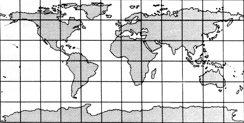

<html>
	<head>
		<style type="text/css">
			#map{
				margin: 0;
				padding: 0;
			}
			#map img{
				position: absolute;
				top: 0; left: 0;
			}
		</style>
		<script src="jquery-1.7.1.min.js"></script>
		<script type="text/javascript" src="http://maps.google.com/maps/api/js?sensor=false"></script>
		<script>
			var googleMapsUrlBase = 'http://maps.googleapis.com/maps/api/geocode/json?address=';			
			var googleMapsUrlTail = '&sensor=false';
			var testSearch = 'Berlin, Germany';

			/*
			 * Replaces all blanks by plus-characters
			 * i.e. 'Berlin, Germany' -> 'Berlin,+Germany
			 */
			/*			
			var replaceBlanks = function(s){
				return s.replace(/ /gi,"+");
			}*/
			
			var mapWidth = 502;
			var mapHeight = 253;
			var pinMarginTop = 0;
			var pinMarginLeft = 0;
			// to actually place the pin on the correct spot we have to 
			// substract half of the width and height,
			// so the middle of the pin is on the coorinates
			var pinWidth = 20;	
			var pinHeight = 20;
			
			/*
			 * Maps a value from range [minFrom..maxFrom] to [minTo..maxTo]
			 */
			var map = function(value, minFrom, maxFrom, minTo, maxTo){
				return minTo + (maxTo - minTo) * ((value - minFrom) / (maxFrom - minFrom));
			}
			
			function pinMarginTop(){
				map()
			}
			
			function pinMarginLeft(){}
			
			function displayMap(){
				$("#map").append('');
				$("#map").append('');		
				$("#mapPin").css("marginTop", pinMarginTop-pinHeight*0.5);
				$("#mapPin").css("marginLeft", pinMarginLeft-pinWidth*0.5);
			}
			
			function loadFromSearch(coordinates, address) {
				midpoint = getLatLong(address, latLongCallback);
			}
				
			/*
			 * Makes a request for the address on the Google Maps API
			 * If the address was not found, there is no error message and no callback is called!
			 */	
			function getLatLong(address, callback) {
				var geocoder = new google.maps.Geocoder();
				var result = "";
				geocoder.geocode({ 'address': address, 'region': 'uk' }, function (results, status) {
				    if (status == google.maps.GeocoderStatus.OK) {
				        result = results[0].geometry.location;
				        latLongCallback(result);
				    } else {
				        result = "Unable to find address: " + status;
				    }
				});
				return result;
			}


			function latLongCallback(result) {
				alert(result)
				alert('Search returns: \n' + 'Latitude: ' + result.lat() + '\n' + 'Longitude: ' + result.lng());
				pinMarginLeft = map(result.lng(), -180.0, 180.0, 0, mapWidth); 
				pinMarginTop = map(result.lat(), 90.0, -90.0, 0, mapHeight);
				displayMap();
			}
			
			
			
						   
			    
		</script>
	</head>
	<body>
		<script>
			$(document).ready(function(){
				//alert('AAAA');
				//getLatLong('Berlin', latLongCallback(result));
				getLatLong('Berlin', latLongCallback);
			});
		</script>	
		<figure id="map"></figure>	
	</body>
</html>